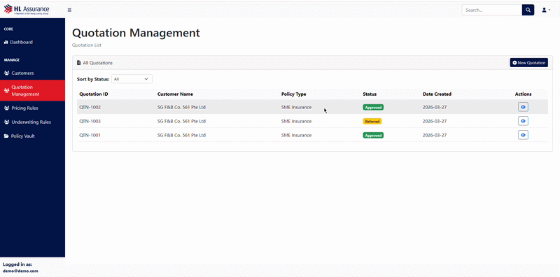
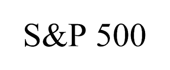
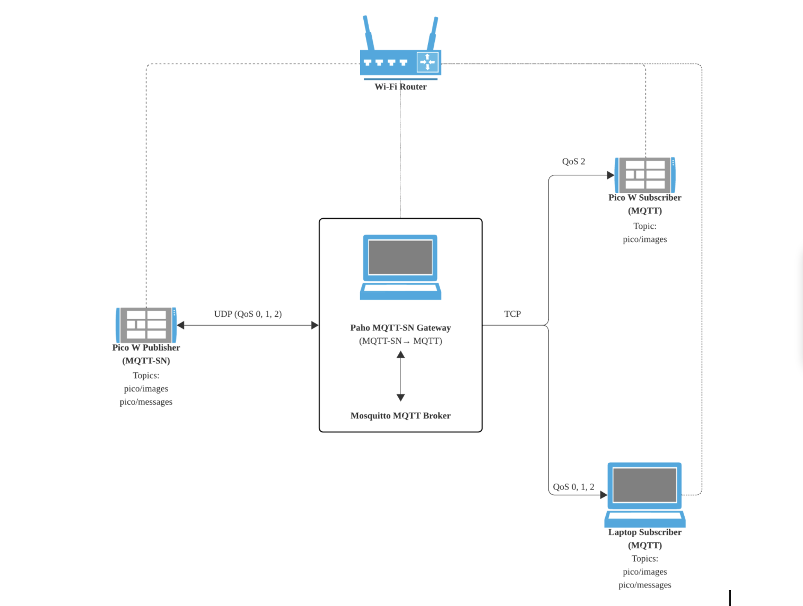
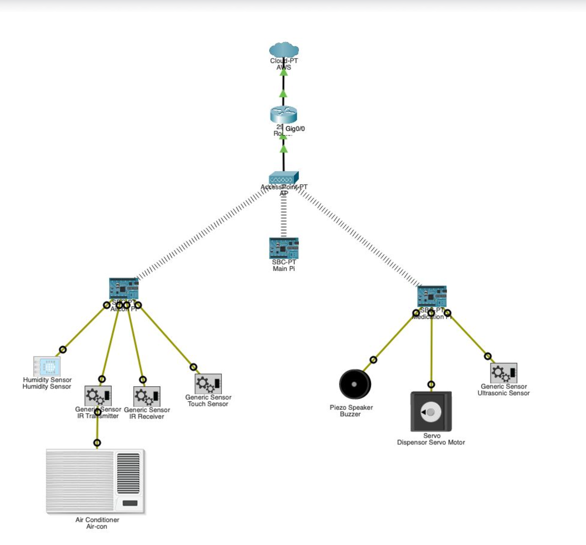
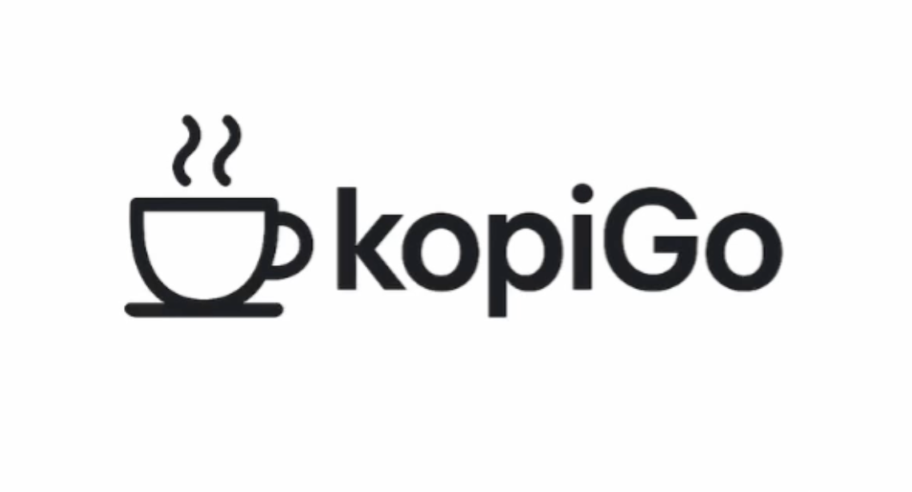
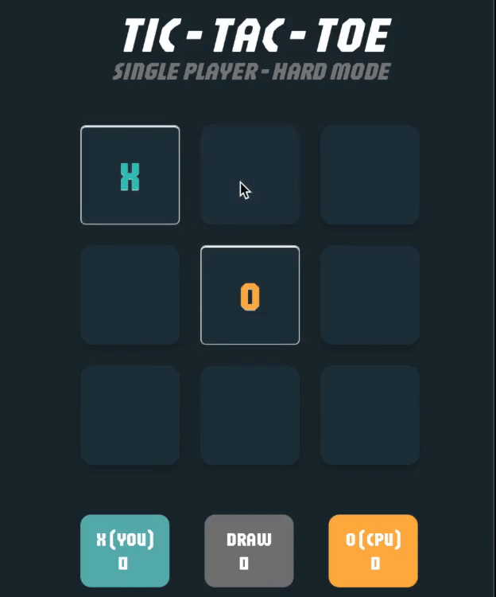
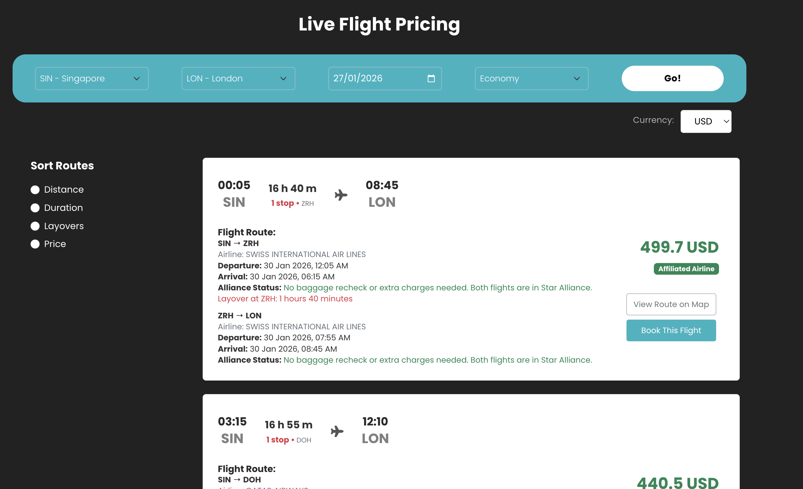
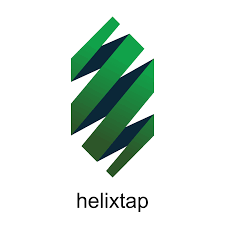
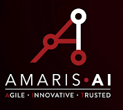

Work
Featured projects

>
01 — Contract · HL Assurance
AI Corporate Underwriting System
Automated insurance quotation & risk assessment with OCR, LLM models and AI vision — from product owner to full-stack delivery.
View details →

02 — Contract · In progress
Cloud Native Payment Service
Serverless payment & accounting platform reducing manual workload by ~90% with real-time WhatsApp notifications and webhook reconciliation.
View details →

>
03 — Research · In progress
SAGE — SPY Prediction Engine
Self-correcting agentic ML pipeline that predicts SPY opening returns daily by synthesising news, sentiment and macro data through an LLM reasoning agent.
View details →

Add GIF
🕵️ FraudBuster
BERT-powered microservice fraud detection for Amazon reviews. 6 services via gRPC, Kubernetes.

Add GIF
🌿 Eco Prompt
AI-powered sustainability prompt engineering tool to encourage greener lifestyle choices.

Add GIF
🏥 WardWatch
Privacy-preserving BLE indoor positioning system for hospital patient tracking. ~0.45m accuracy.

Add GIF
📱 FocusAI
Android productivity app with distraction detection, movement breaks, and AI-generated study artifacts from PDFs.

Add GIF
📡 MQTT-SN via UDP
Custom MQTT-SN client on Raspberry Pi Pico W supporting QoS 0/1/2 and chunked image transfer over UDP.

Add GIF
💊 IoT Healthcare Monitor
Elderly care system with smart medication dispenser, emergency alerts, and blockchain access control via Raspberry Pi.

Add GIF
☕ KopiGo
Tourism web app helping visitors discover Singapore hawker centres and attractions with route planning and reviews.

Add GIF
🎮 AI Tic-Tac-Toe
Minimax algorithm with alpha-beta pruning for unbeatable AI opponent, built to explore game-tree search.

Add GIF
✈️ FlySwift
Flight search app with live Amadeus API pricing, route maps, layover analysis and custom sorting algorithms.

Add GIF
🌐 Revamp Helixtap Website
Rebuilt production subscription platform with dynamic Django pages and automated scraping saving 10+ hrs/week.

Add GIF
🛡️ AI Adversarial Detector
Generated adversarial malware samples achieving 60% evasion rate against commercial antivirus engines.
Add GIF
🦠 CovidGuard
Proof-of-concept health screening system combining OCR and thermal camera with adversarial API countermeasures.